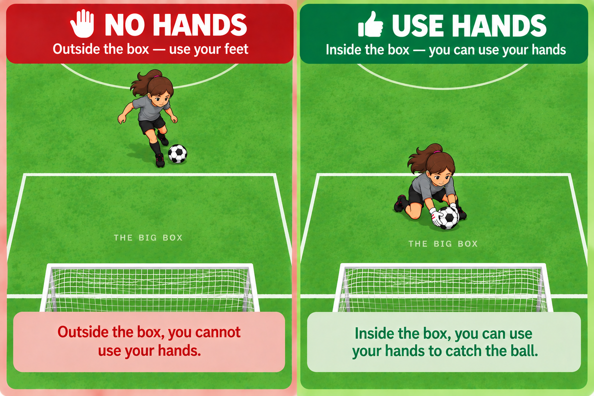
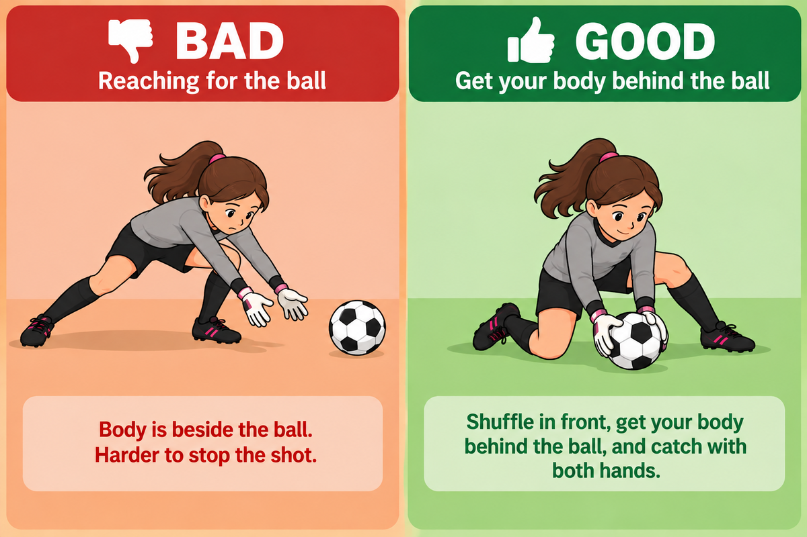

<title>Lesson 02 — Goalie Introduction</title>
<link rel="preconnect" href="https://fonts.googleapis.com">
<link rel="preconnect" href="https://fonts.gstatic.com" crossorigin>
<link rel="stylesheet" href="https://fonts.googleapis.com/css2?family=Archivo:wght@600;700;800&family=Asap:wght@400;500;600&family=IBM+Plex+Mono:wght@500;600;700&display=swap">
<link rel="stylesheet" href="../../assets/site.css">
<link rel="stylesheet" href="../../assets/document.css">
<link rel="stylesheet" href="../../assets/print.css">

<header><div class="wrap">
  <div class="topline"><p class="kicker">Lesson 02</p><a class="back" href="../../">&larr; Back Home</a></div>
  <h1>Goalie Introduction</h1>
  <p class="meta"><span><b>Teaches</b> · where the goalie can go, how to be ready, and where to stand</span>
    <span><b>Needs first</b> · lesson 01</span></p>
</div></header>

<section><div class="wrap">
  <div class="sechead"><h2>Where Goalies Use Hands</h2></div>
  <figure class="photo-fig">
    
  </figure>
  <p class="note" style="margin-top:14px">The goalie can go <b>anywhere on the field</b>.
  The box only changes what your hands are allowed to do.</p>

  <h3>What we tell the players</h3>
  <div class="says">
    <div class="say big"><span class="title">Inside the big box</span><span class="quote">“You can use your hands.”</span></div>
    <div class="say big"><span class="title">Outside the big box</span><span class="quote">“You’re a regular soccer player. No hands.”</span></div>
  </div>
  <p class="note" style="margin-top:14px"><i>Coaches say penalty box. To the kids it’s
  <b>the big box</b> — it needs no teaching, and it still points at the right line if the
  field is marked with two.</i></p>
</div></section>

<section><div class="wrap">
  <div class="sechead"><h2>Where Goalies Stand</h2></div>
  <figure class="wide-fig"><svg viewBox="0 0 400 262" role="img" aria-label="Close-up of the goal end: the big box, the small box inside it, and the goal. The goalie stands in the middle of the small box's front line, inside a shaded band about half the width of the goal, showing they can shuffle roughly two steps either way.">
  <rect x="8" y="44" width="384" height="188" fill="var(--grass)"/>
  <rect x="32" y="102" width="336" height="130" fill="none" stroke="var(--line)" stroke-width="2.5"/>
  <path d="M66 102 A 360 360 0 0 1 334 102" fill="none" stroke="var(--line)" stroke-width="2.5"/>

  <rect x="172" y="170" width="56" height="40" rx="5"
        fill="var(--yes-soft)" stroke="var(--yes)" stroke-width="2" stroke-dasharray="6 5"/>

  <rect x="100" y="190" width="200" height="42" fill="none" stroke="var(--line)" stroke-width="2.5"/>
  <line x1="8" y1="232" x2="392" y2="232" stroke="var(--ink)" stroke-width="3"/>
  <rect x="144" y="232" width="112" height="20" fill="none" stroke="var(--ink)" stroke-width="5"/>

  <text x="200" y="160" text-anchor="middle" font-family="Archivo,sans-serif"
        font-size="14" font-weight="700" fill="var(--yes)">2 Steps Either Way</text>

  <circle cx="200" cy="190" r="14" fill="var(--keeper)" stroke="var(--ink)" stroke-width="2.5"/>
  <text x="200" y="195" text-anchor="middle" font-family="Archivo,sans-serif"
        font-size="13" font-weight="700" fill="var(--ink)">G</text>
</svg>
    <figcaption>Stand on the line in front of the goal.<span>From there you can shuffle about two steps either way and still cover the goal.</span></figcaption>
  </figure>

  <div class="says">
    <div class="say big"><span class="title">Step out</span><span class="quote">“Stand out of the goal to give shooters a smaller target.”</span></div>
    <div class="say"><span class="title">Stay in line with the ball</span><span class="quote">“Shuffle left and right — a few steps.”</span>
      <p class="after">Stay between the ball and the middle of the goal.<br>Standing near a
      post leaves the most of the goal wide open.</p></div>
  </div>
</div></section>

<section><div class="wrap">
  <div class="sechead"><h2>Block With Your Body</h2></div>
  <figure class="photo-fig">
    
  </figure>
  <div class="says" style="margin-top:18px">
    <div class="say big"><span class="title">The whole idea</span><span class="quote">“Your hands might miss. Your body is your backup.”</span></div>
  </div>
</div></section>

<section><div class="wrap">
  <div class="sechead"><h2>Ready Position</h2></div>
  <div class="trio">
    <div><b>Knees bent</b><span>Low and springy, not standing straight up.</span></div>
    <div><b>Hands ready</b><span>Out in front, not at your sides.</span></div>
    <div><b>Watch the ball</b><span>Not the player, not the crowd.</span></div>
  </div>
  <div class="says" style="margin-top:18px">
  </div>
</div></section>

<section><div class="wrap">
  <div class="sechead"><h2>You Got the Ball. Now What?</h2></div>
  <figure><svg viewBox="0 0 460 400" role="img" aria-label="The goalkeeper with the ball. Arrows go out wide to two open defenders on the left and right. An arrow going straight up the middle into a crowd of three opponents is marked wrong.">
      <rect x="12" y="10" width="436" height="380" rx="4" fill="var(--grass)" stroke="var(--line)" stroke-width="2.5"/>
      <line x1="188" y1="390" x2="272" y2="390" stroke="var(--ink)" stroke-width="8" stroke-linecap="round"/>

      <path d="M204 322 C 150 300, 100 272, 78 232" fill="none" stroke="var(--yes)" stroke-width="6" stroke-linecap="round"/>
      <path d="M74 220 l -3 18 l 17 -7 z" fill="var(--yes)"/>
      <path d="M256 322 C 310 300, 360 272, 382 232" fill="none" stroke="var(--yes)" stroke-width="6" stroke-linecap="round"/>
      <path d="M386 220 l 3 18 l -17 -7 z" fill="var(--yes)"/>

      <path d="M230 306 L230 224" fill="none" stroke="var(--no)" stroke-width="6" stroke-linecap="round" stroke-dasharray="12 9"/>
      <g stroke="var(--no)" stroke-width="8" stroke-linecap="round">
        <line x1="214" y1="196" x2="246" y2="228"/><line x1="246" y1="196" x2="214" y2="228"/>
      </g>

      <g opacity=".55">
        <circle cx="196" cy="146" r="21" fill="var(--muted)"/>
        <circle cx="248" cy="120" r="21" fill="var(--muted)"/>
        <circle cx="262" cy="172" r="21" fill="var(--muted)"/>
      </g>
      <text x="230" y="78" text-anchor="middle" font-family="Archivo,sans-serif" font-size="17" font-weight="700" fill="var(--no)">THE CROWD</text>

      <g font-family="Archivo,sans-serif" text-anchor="middle">
        <circle cx="56" cy="200" r="27" fill="var(--pitch)"/>
        <text x="56" y="208" font-size="16" font-weight="700" fill="#fff">LD</text>
        <text x="56" y="248" font-size="14" font-weight="700" fill="var(--yes)">OPEN</text>
        <circle cx="404" cy="200" r="27" fill="var(--pitch)"/>
        <text x="404" y="208" font-size="16" font-weight="700" fill="#fff">RD</text>
        <text x="404" y="248" font-size="14" font-weight="700" fill="var(--yes)">OPEN</text>
        <circle cx="230" cy="336" r="27" fill="var(--keeper)" stroke="var(--ink)" stroke-width="2.5"/>
        <text x="230" y="344" font-size="16" font-weight="700" fill="var(--ink)">GK</text>
      </g>
    </svg>
    <figcaption>Look to the sides, away from the crowd.<span>Roll it, throw it, pass it — give the ball to our team.</span></figcaption>
  </figure>
  <div class="says" style="margin-top:18px">
    <div class="say big"><span class="title">When you catch it</span><span class="quote">“Catch → Hug → Look → Pass.”</span></div>
    <div class="say big"><span class="title">Play at your speed</span><span class="quote">“Take your time if it’s risky,<br>counter attack quickly when safe.”</span></div>
    <div class="say big"><span class="title">Get ready</span><span class="quote">“Run back into position.”</span></div>
  </div>
</div></section>

<section><div class="wrap">
  <div class="sechead"><h2>Drills</h2></div>
  <div class="todo">No drills written yet. When <code>work/drills/</code> fills up, the ones
  that serve this lesson land here — starting with <b>Goalie Movement &amp; Saves</b>, from practice 1.</div>
</div></section>

<footer><div class="wrap footline">Lesson 02 · Goalie Introduction · 10U<a class="back" href="../../">&larr; Back Home</a></div></footer>

